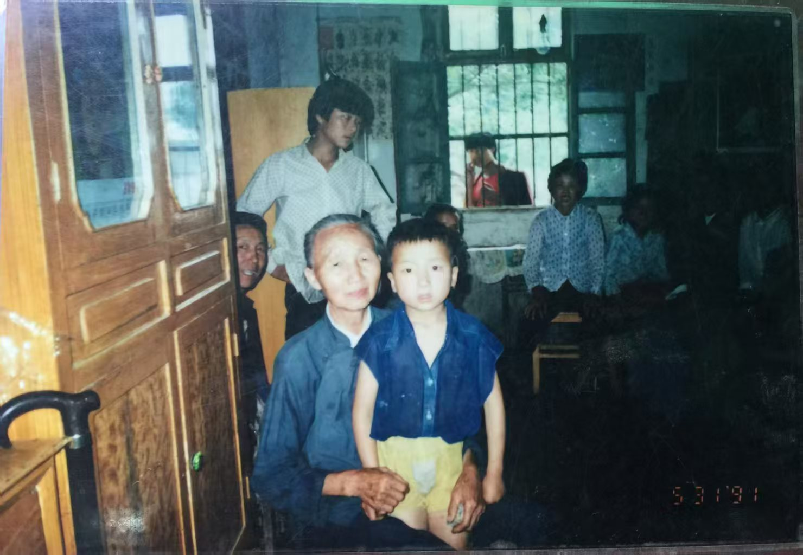
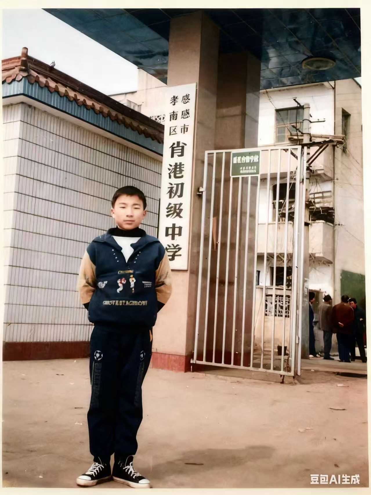
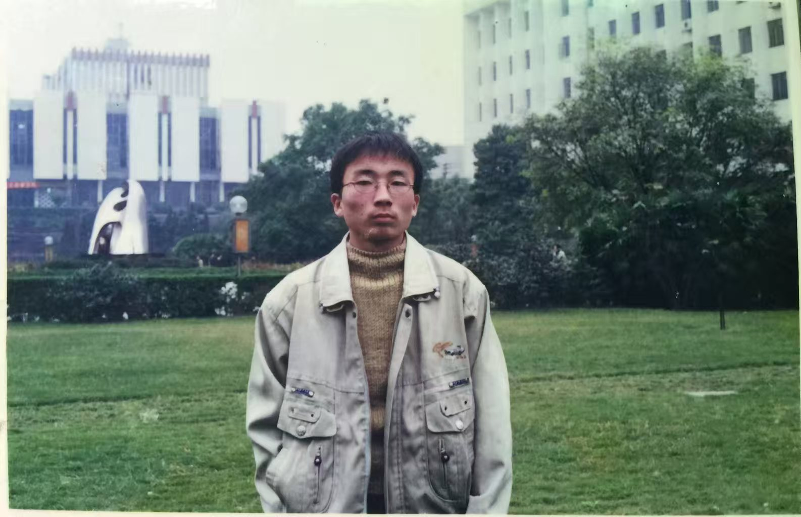
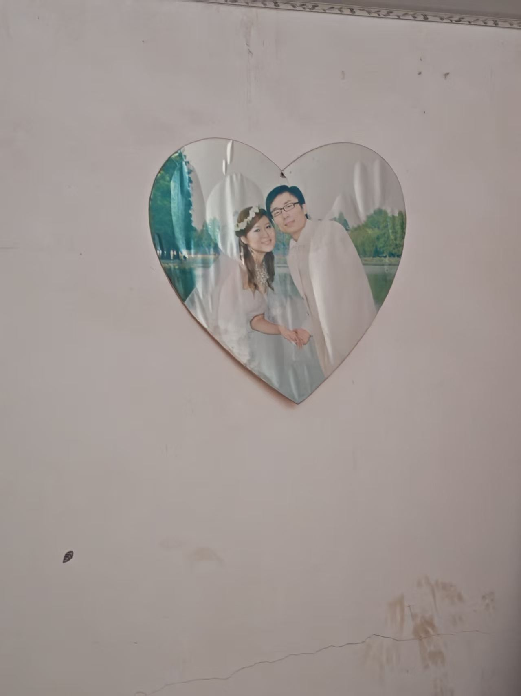
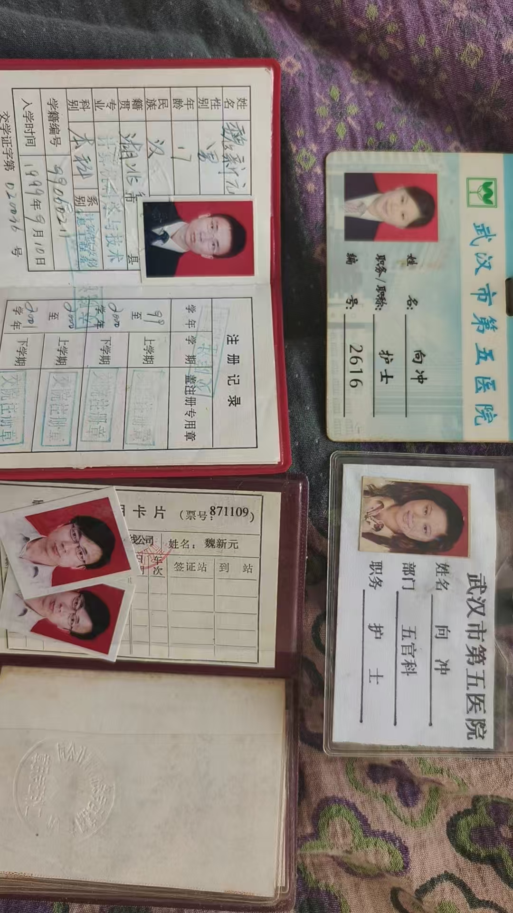
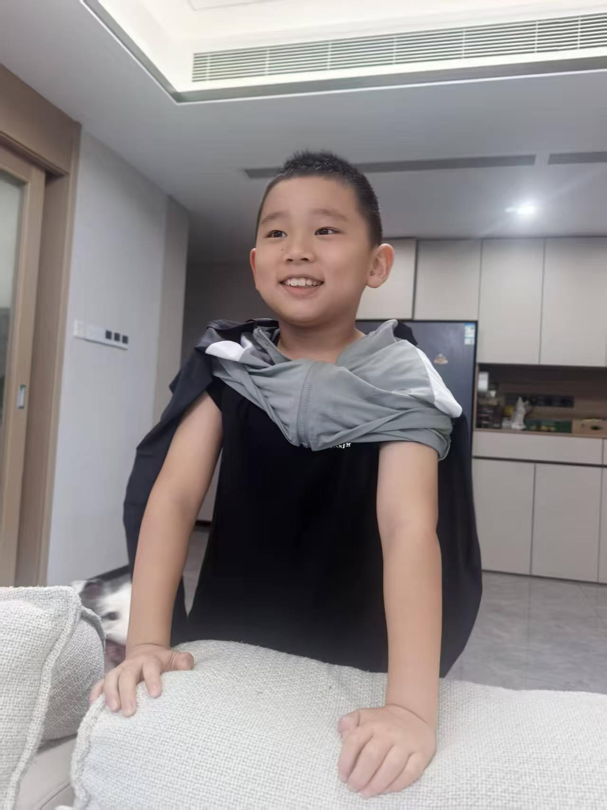
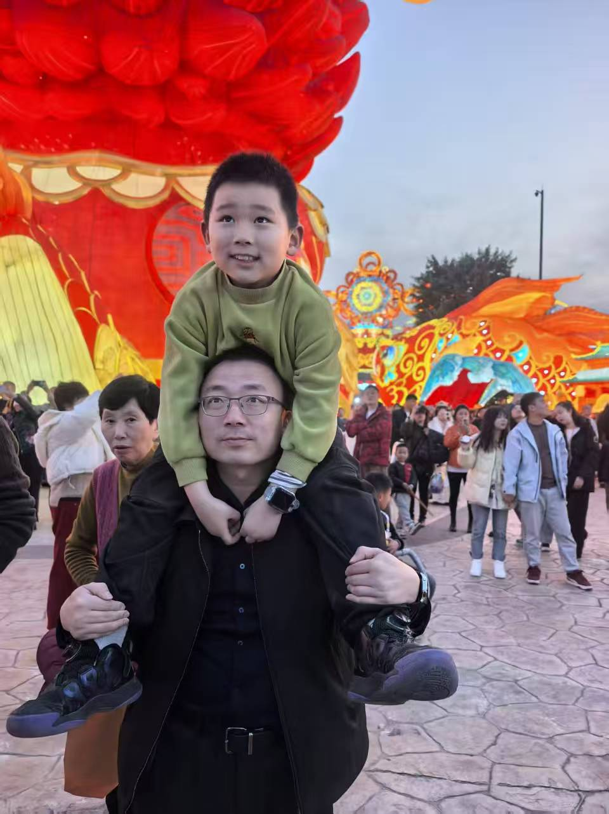
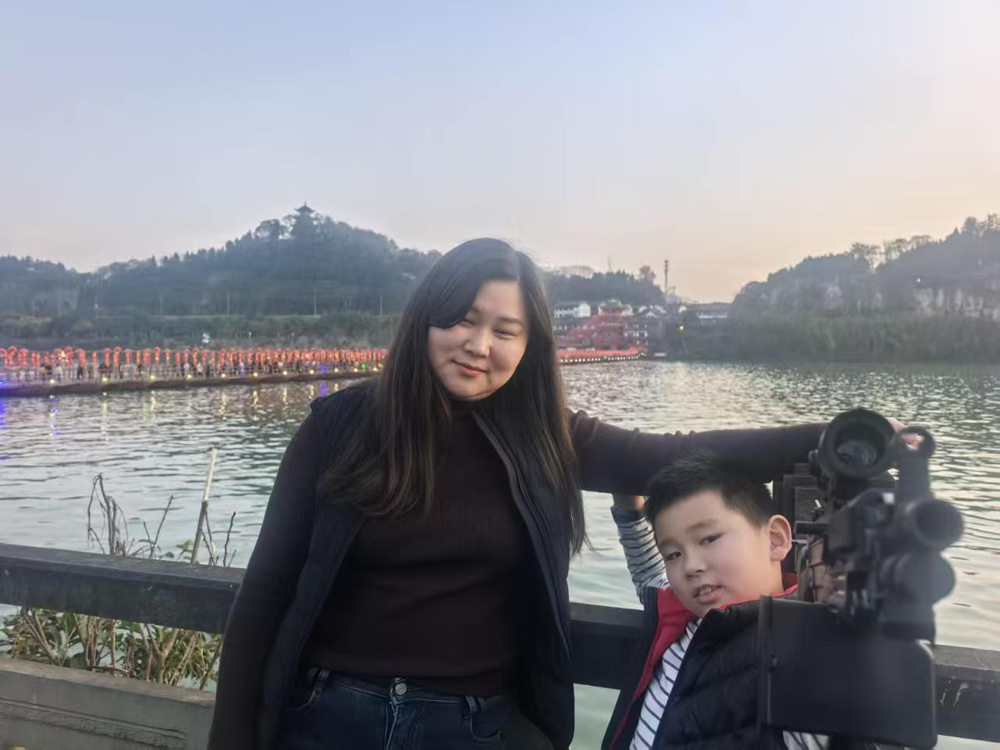
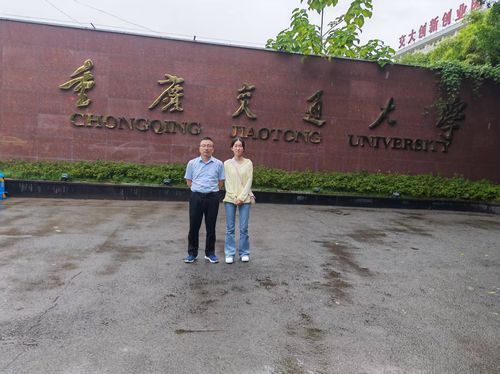
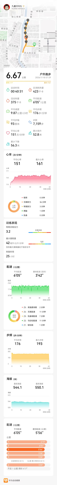

01
原来您也曾是个孩子
您发给我小时候的照片时，
我忽然发现，
原来在成为叔叔、成为父亲之前，
您也曾是您的奶奶怀里的小男孩。
那时候的您不会想到，
很多年后，
自己也会成为别人依靠的人。

02
人生的第一段远方
站在初中校门口的少年，
眼神里还带着青涩，
也带着一点认真。
那时候的未来还很远，
可很多东西，
好像已经在那时悄悄开始。

03
第一次离家很远
后来，您离开家乡去了重庆。
您的父亲陪您从湖北孝感老家出发，
送您来到重庆交通大学报到，
那是您人生新阶段的起点。
那时候没有现在这么方便的联系，
想家也许只能藏在心里。
多年后再看这张照片，
我才发现，
每一个成熟的大人，
都曾是一个独自走向远方的年轻人。

04
后来，您有了一个家
墙上的结婚照，
静静挂了很多年。
照片里的你们还很年轻，
后来一起走过生活，
有了孩子，
有了家庭，
也有了属于自己的故事。

05
那些没有被丢掉的岁月
学生证、工作证、旧照片，
这些被保存下来的东西，
像是时间留下的凭证。
原来人生不是突然走到今天的，
是一张张证件，
一次次选择，
一步一步走出来的。

06
后来，您成了别人的超人
小时候，
您是您的奶奶怀里的孩子。
后来，
您有了自己的孩子，
也成了他们眼里最可靠的大人。
时间真的很奇妙，
它会把一个少年，
慢慢变成别人的依靠。

07
从前有人这样抱着您
小时候，
您的奶奶把您抱在怀里。
后来，
您把孩子扛在肩上。
原来爱从来不会消失，
它只是换了一种方式，
一代一代地传递下去。
08
他们正在长大
孩子们在一年一年长大。
一个渐渐有了自己的想法，
一个还会因为一件小事笑得很开心。
而您，
也在陪着他们，
慢慢走过属于他们的童年。

09
被认真珍惜的日常
幸福有时候并不复杂。
可能只是春节的一次出游，
一家人走在一起，
看看风景，
聊聊日常。
那些当时觉得平凡的瞬间，
后来都会变成珍贵的回忆。
10
那些值得记录的小事
您记录小儿子吃饭的视频时，
也许只是觉得那一刻很可爱。
可后来我发现，
真正让人怀念的，
往往就是这些最普通的日常。
一顿饭，
一个笑容，
一个被认真记录下来的瞬间，
都是生活本身。
时光绕了一个圈
后来我才知道，
很多年前，
也是从湖北孝感出发，
您的父亲送您来到重庆交通大学报到。
那时候的您，
和现在的我一样年轻。
那时候的您的父亲，
也和现在的您一样。
时间慢慢向前走。
曾经有人送您奔赴远方，
后来，
您又送我来到这里。
有些爱从来没有离开。
它只是从姥姥的肩上，
传到了您的父亲的肩上，
传到了您的肩上，
又传到了下一代人的人生里。

11
后来，您送我来到这里
您曾经来到这里求学。
很多年后，
您又陪我来到这里。
站在校门口的时候，
我忽然想到，
也许很多年前，
您的父亲也曾站在这里。
看着年轻的您走进校园，
就像后来您看着我一样。
原来有些路，
一家人会走很多次。
只是每一次，
身边的人不同了。
很多年前，您的父亲送您来重庆。
很多年后，您送我来重庆。
12
您教会我的事
您总告诉我，
要多拍照片，
多感受当下，
好好生活，
好好爱自己。
以前我以为这只是长辈的叮嘱。
后来我才明白，
这是您把自己这些年懂得的东西，
一点点告诉我。

13
认真生活的人
您跑步，
不是为了证明什么。
而是在忙碌和压力之外，
给自己留一段喘息的时间。
一双跑鞋，
一条路线，
一段只属于自己的时间。
原来好好生活，
也包括认真照顾自己。
时光拼贴
叔叔，谢谢您。
谢谢您让我看见，
一个人可以怎样认真地生活，
认真地爱家人，
认真地走过人生的每一个阶段。
以前我认识的是"我的叔叔"，
后来我慢慢认识的，
是一个认真生活、也温柔提醒我好好生活的人。
愿以后的日子里，
您少一点压力，
多一点轻松。
多拍照片，
多看风景，
也多爱自己一点。
—— 您的侄女 魏文